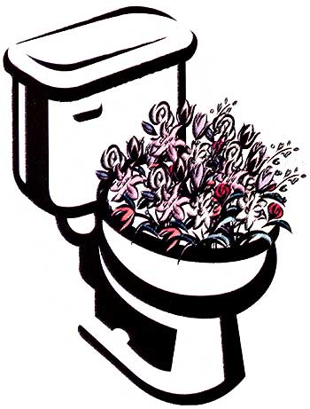
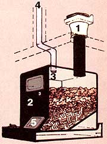
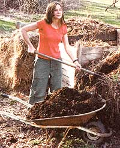

energy & environment
Composting toilets are a world away from the odoriferous outhouses of yesteryear. And low-flush conventional toilets offer an option for those unprepared to recycle human manure. To save money, extend the life of your septic system and help protect water quality, read on. Become a water-wiser watermiser.
One person using a composting toilet can produce more than 80 pounds of compost and save more than 6,600 gallons of water per year. While composting toilets make environmental sense, they also can put dollars and cents back into your pocket by reducing your water bills and extending the life of your septic system.
Composting toilets stabilize and recycle human manure and toilet paper without using or polluting drinking water. Unlike flush toilets, which treat human manure as waste, a composting toilet lets you reclaim and recycle nutrients-using the same biological process as garden composting piles to break down excreta, or human manure. What's left is nutrient-rich organic matter, or humus, which can be used as a soil amendment.
Once considered an option only for parks, homesteaders and seasonal cottages, composting toilet systems are turning up in suburban residences and' commercial buildings, often in environmentally sensitive areas.
ADOPTED FROM DELPORTO AND STEINFELD, COMPOSTING TOILET SYSTEMS
Commercial composting toilets first appeared in the United States in the 1970s, as mostly just a way to avoid installing a flush toilet and expensive septic system. But issues of shoddy construction and overoptimistic designs plagued both the manufactured and build-it-yourself models, and users struggled with odors, flies, incomplete processing and hard-to-empty systems. The legal foot came down in the early 1980s when a report by the U.S. Environmental Protection Agency and the California Division of Occupational Safety and Health gave these systems failing marks. Since then most designs have improved significantly, reflecting a healthier respect for the aeration and heat requirements of composting.
Many of today's composting toilets can be used with vacuum toilets (such as the 1 pint microflush SeaLand, originally made for recreational vehicles and boats) and Japanese foam-flush toilets (see Page 92 for more information). In many states, using a composting toilet allows a property owner to install a smaller septic system. Many owners now opt for service contracts to maintain their composting toilet systems.
Composting relies on aerobic (oxygen-loving) bacteria that work 10 to 20 times faster than the anaerobic (oxygenless) bacteria at work in septic tanks. The challenge of composting toilets is getting air to the composting process while minimizing human exposure to the contents. That calls for careful engineering of airflow, so air is taken in and then exhausted through the exhaust vent chimney, not through the bathroom.
Some management is also required: turning or batching the material, and adding coarse material (such as sawdust or dry leaves) to keep it porous, so the aerobic bacteria stay healthy and functional.
Keeping the material aerated also means it can't be too wet, so only waterless or microflush toilets are used with composting toilet systems. Waterless toilets are usually just toilet stools with 8- or 10-inch openings that connect through a straight pipe into the composter. For those who want a toilet trap between themselves and the composter, a microflush toilet, such as the SeaLand Traveler 1-pint flush toilet, can be used, provided extra liquid in the composter is evaporated, drained to a septic system or used in subsurface irrigation. Other microflush toilets include foam-flush toilets, which use an aquarium-type air pump to bubble air through a soap-and-water mixture, creating lots of foam to move material out of the bowl.
Composting toilet systems are not a flush-and-forget technology. They require consciousness of what's put into the toilet (No toxic chemicals, please!), some maintenance, well thought out siting and installation, and in many cases, electricity for operating fans and heaters.
The most common installation mistakes are siting them in cold places (unheated basements, for example), not draining away leachate (liquids) and installing systems that are too small for the usage they'll get.
In composting toilet systems, most pathogens are destroyed through a combination of heat and retention time. But many states require the compost toilet end product either to be hauled off by a sewage hauler or buried under 6 inches of soil. To comply and still reap the nutrient benefits of human manure, most folks choose to bury the end product in the root zone of ornamental plants. Even without legal approval, some individuals choose to compost the end product further in an active, outdoor compost pile, or to use a pasteurizer, such as a solar oven, to destroy potential pathogens.
Will Brinton, Ph.D., of Woods End Research Laboratory has tested several samples from composting toilets in the past year. Most of the samples have undergone at least 1 1/2 years of retention time. "In all the samples of composted human manure we have tested, E. coli pathogens were not present at levels relevant to the Environmental Protection Agency's pathogen test rule," says Brinton. "Adequate composting time and/or temperatures generally will make human manure safe to use, even though local laws may not acknowledge this fact. We recommend individuals who wish to use composted human manure for surface application test for fecal coliform after the first round of composting." [For details, contact Woods End at www.woodsend.org or (207) 293-2457.]
There are several types of composting toilets. These systems are either self-contained (usually for cottages) or central (also referred to as remote and below-floor ).
With self-contained systems , the toilet seat and a small composter are all one unit. Due to their small size, they are typically used in cottages and seasonal homes. Because of their limited capacity, these systems require frequent emptying, which is accomplished simply by removing the small tray that sits underneath the toilet. The end product from these systems can be buried around trees and shrubs, or composted with other materials in an outdoor composting bin. Prices range from about $750 to 1,500 for these units. Self-contained systems include models available from Sun-Mar, Biolet and Envirolet.
In a central system , the toilet empties to a separate composting chamber, usually located in the basement or in its own enclosure to the side of the building. In these systems, frequent emptying is not necessary, although you may need to rake the contents occasionally. When the chamber fills (usually within a year), the contents-which have composed into a fine, crumbly product-can be removed with a shovel and wheelbarrowed out to an outdoor composting bin or buried in trenches outside. Commonly the choice of year-round homes and facilities with multiple toilets, central composting toilets range in price from $1,400 to more than $10,000 for large-capacity systems. Systems include AlasCan, Clivus Multrum, CTS, EcoTech Carousel, Phoenix and Sun-Mar Centrex.
AlasCan
(763) 383-5136
www.alascanofmn.com
BioLet
(800) 5246538
www.biolet.com
BioSun
(800) 8478840
www.biosun.com
Clivus Multrum
(800) 425-4087
www.clivus.com
CTS Composting Toilet
Systems
(888) 786-4538
EcoTech Carousel
(978)369-3951
www.ecological
engineering.com/ecotech.htm
Envirolet Composting Toilet
(800) 387-5126
www.envirolet.com
Phoenix Composting Toilet
(406) 862-3854
www.compostingtoilet.com
Sun-Mar Corporation
(905)332-1314
www.sunmar.com
Many homeowners make their own systems. Some designs are simply copies of manufactured systems, such as a concrete version of sloped, single-chamber systems like the Clivus Minimus. Other designs use a batch approach with two or more interchangeable containers: When one fills, another is put into use, allowing the first container to process without fresh inputs. The containers are either fixed, as in aerated twin-bin systems made of concrete (CEPP Net Twin-Bin, Farallones System, Gap Mountain), or they are alternating containers, such as barrels and rollaway trash bins (CEPP NetBarrel, Sol-Latrine, Sunny John). The best designs feature some kind of management of the leachate and adequate ventilation for the composting process and odors (both the books listed in "On the Bookshelf," Page 91, give detailed information on batch systems). All of these systems can be used with microflush toilets. The CEPP NetBarrel system, which can be integrated with a graywater system, can cost as little as $15 to construct. Add a 1-pint flush toilet, and the total is only $260. These systems provide as much capacity as one has containers.
Some users bypass composting toilets altogether and use a very low-tech system, collecting their human manure in a bucket housed underneath a small built-in cabinet. With a standard toilet seat and lid on a hinged top, the cabinet hides the bucket until it's ready to be emptied. A cover material, such as well-rotted sawdust or finely ground leaves, is added after each use to act as an odor filter. When the bucket is full, it's emptied into an outdoor composting pile. Distinguished from composting toilets, in which composting takes place within the chamber itself, these sawdust toilets are simple collection devices; the actual composting occurs along with veggie peels, grass clippings and other compostables in a separate, outdoor bin. Direct outdoor composting requires no fans or electricity, but does require management and lots of carbon-containing cover material (sawdust, rotted leaves and straw) to cover the manure for composting.
This method probably won't gain approval from most health officials as a replacement for a flush toilet. Sawdust toilets are for people who are serious about nutrient recycling, don't mind the regular job of emptying containers onto a compost pile and will responsibly manage the compost to ensure the compost pile achieves thermophilic conditions (more than 113 degrees) to destroy pathogens. Because his compost achieves high temperatures and undergoes two seasons of aging, organic gardener Joseph Jenkins uses his composted human manure as a garden soil amendment. In most other composting toilet systems, although some excreta breakdown occurs within the indoor chamber, materials usually do not heat up enough to reliably destroy pathogens. To comply with legal regulations, most manufacturers advise against using the end product in food gardens. Jenkins details the differences between sawdust collection systems and composting toilet systems in his book, The Humanure Handbook (See MOTHER'S Bookshelf, Page 103). Instructions for building a sawdust collection toilet can be found at www.jenkinspublishing.com/sawdustoilet.html .
Plumber Terry Love says the whoosh of a pressure-assist is just unfamiliar compared to the gurgle of a gravity-flush toilet.
Plumbing and wastewater codes usually allow composting toilets when a conventional septic system or sewer service is already in place. For all other situations, property owners may have to get special permits, depending on the state. Maine, Massachusetts, Minnesota, New Mexico and Washington are among the most accepting. Although National Sanitation Foundation listed systems are preferred, many states also approve systems based on their own criteria. New onsite standards, which may be adopted nationally, will likely approve any model that features the capacity for two-year retention of the end product. Given enough information about the systems, most health officials are usually willing to work with homeowners. Legal acceptance of composting toilets is increasing rapidly, as their benefits become clear to all: no pollution, water and energy savings, and nutrient recycling.
Low-Flush Toilets
For those of us who live in areas where composting toilets aren't permissible yet, an alternative to water-wasting, high-volume toilets is low-flush toilets. If you are planning to build a home, federal law now requires 1.6-gallon low-flush toilets be installed. Older toilets suck down between 3 to 5 gallons of fresh water with each flush.
According to the American Water Works Association (AWWA), the average American uses 74 gallons of water per day. Almost one-third of this water goes to flushing toilets. Seem wasteful? It is.
As demand for pure water grows while fresh water supplies dwindle, conservation measures must be implemented. A 1.6-gallon low-flush toilet can cut household water usage by 20 percent or more. The AWWA estimates if every American household switched to water-efficient toilets 22.3 million gallons of water would be saved each year.
So what's the holdup? Unfortunately, these watermisers weren't designed well when they were introduced. Folks frequently faced the fate of double-flushing or, even worse, clogged toilets. "Back when the lowflush models were first mandated in 1992, the imported Swedish lowflush toilets worked great," says David Del Porto, a designer of water conservation and alternative wastewater systems. "But U.S. manufacturers didn't change their designs. They just made smaller tanks." Coupled with old pipes and low pressure in many older homes, the first U.S. lowflush toilets were doomed to fail.
Now changes in design have produced high-performing low-flush toilets that can significantly reduce your home water use and take a load off your septic system.
"Today's 1.6-gallon toilets-even the mediocre ones-are a lot better than the old 5-gallon flush toilets," says plumber Terry Love, who has sold and installed low-flush toilets since 1974.
Love says the biggest problem is clogging. Some toilets have sharp edges in their drains that catch toilet tissue as well as items people drop in toilets, such as makeup pencils, pens and toys. For that reason, shop for toilets with smoother edges around the drain and more sweeping traps with gently angled drains. They simply perform better. (Toto and most high-end models qualify; see Love's recommendations on Page 92).
Gravity-flush toilets are the most common, have the simplest design and are usually the least expensive, ranging in price from $50 to $420. When the toilet knob is pressed, a flush valve opens, and the water in the toilet tank drains into the bowl through rim openings. The force of the water pushes the waste through the trap and down the drain line. While they are less effective at removing solid waste than pressure-assisted toilets, they're generally less expensive and easier to maintain, since most use standard, widely available parts.
Pressure-assisted toilets are suited for commercial buildings or in homes with poor drain line carry, where pipes aren't pitched enough to allow waste to flow easily to the septic system or sewer line. When the toilet is flushed, the pressure of the water coming into the main tank compresses air in an inner tank, forcing water into the bowl and blasting waste down the drain. Some consider pressure-assisted toilets noisy, although Love says the whoosh of a pressure-assist is just unfamiliar compared to the gurgle of a gravity-flush toilet; Pressure-assisted toilets are more effective in removing solid waste and limiting odor and soil problems, but are also a bit more expensive than gravity-tank toilets; prices usually start around $230.
Perhaps the greatest advance in water-saving toilets are the dual-flush toilets, which feature two flush buttons: Press the dark one to flush feces with 1.6 gallons of water or press the light one to flush only urine with 8 gallon. Caroma's dual-flush from Australia is now imported to the United States; prices start at $250.
Vacuum toilets use a vacuum pump to suck waste away. They are expensive and mostly found in ships, trains or buildings where waste must be moved without the benefit of gravity. The Seal-and microflush 1-pint toilet is one of a few toilets made for boats and recreational vehicles, and for use in composting toilet systems. These toilets can transport waste a long distance.
Before installing a low-flush toilet, check to make sure your drain system is working and does not block easily. If your drain system often clogs, have it fixed, but also specify a toilet that is rated high for drain line carry. If your home was built within the last 10 years, any of the lowflush toilets will work.
Love's Web site ( www.terrylove.com ) describes his favorite low-flush toilets. His first choice? The UltraMax, a gravity-flush by Toto. "It is a good-looking one-piece that incorporates a 3-inch flush valve, instead of the standard 2-inch, which allows the waste to drop quicker. It meets commercial requirements, works well in a home and is quieter than the pressure-assisted models." He says the only drawback may be less bowl wash. Priced around $350, its a little more expensive than some toilets, but he thinks it's worth the money.
For low-use applications, Love recommends pressure-assisted Gerber models ($9) to $279), and the gravity-flush American Standard Cadet ($174) or Western Aris ($99).
The economics of flushing with less is apparent: A New York City program that offers subsidized or free low-flush toilets in exchange for property owners' 3- and 5-gallon toilets has saved millions of dollars in water costs since 1992. Nationally, the new lowflush toilets are credited with saving between 25 and 60 gallons of water per day each, saving consumers an estimated $50 to $100 on their annual water bills.
"Today's low-flush toilets work," Love says. "And these days, we just don't have the water to waste."
Carol Steinfeld is the co-author of The Composting Toilet System Book . Claire Anderson contributed research to The Humanure Handbook and is an assistant editor at Mother Earth News.
|
 ADOPTED FROM DELPORTO AND STEINFELD,COMPOSTING TOILET SYSTEMS |
 An organic gardener reaps the results of conscientious composting: free fertilizer. Properly composted, humanure is a safe, nutrient-rich amendment. |
 |